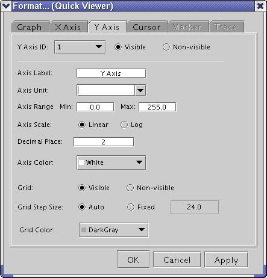

Y-axis Properties

Item |
Description |
|---|---|
Y-axis ID |
Specify the target y-axis ID to be changed and make the specified axis visible or non-visible with the corresponding check boxes (Visible/Non-visible). |
Axis Label |
Specify a label for the axis in this text area. |
Axis Unit |
Specify a unit or choose a unit from the pull-down list for the axis in this text area. This unit is not a mere string. If you specify this unit, the graph will be changed based on this unit. |
Axis Range |
Specify a range for the axis in this text area. |
Axis Scale |
Specify a scale of the axis (linear-scale or log-scale). |
Decimal Place |
Specify the number of displayed decimal places. |
Axis Color |
Specify a color of the axis in this combo box. |
Grid |
Make the specified grid visible or non-visible with the corresponding check boxes (Visible/Non-visible). |
Grid Step Size |
Specify a step size for the grid in the Fixed text area or select Auto for automatic step size selection. |
Grid Color |
Specify a color for the grid in this combo box. |